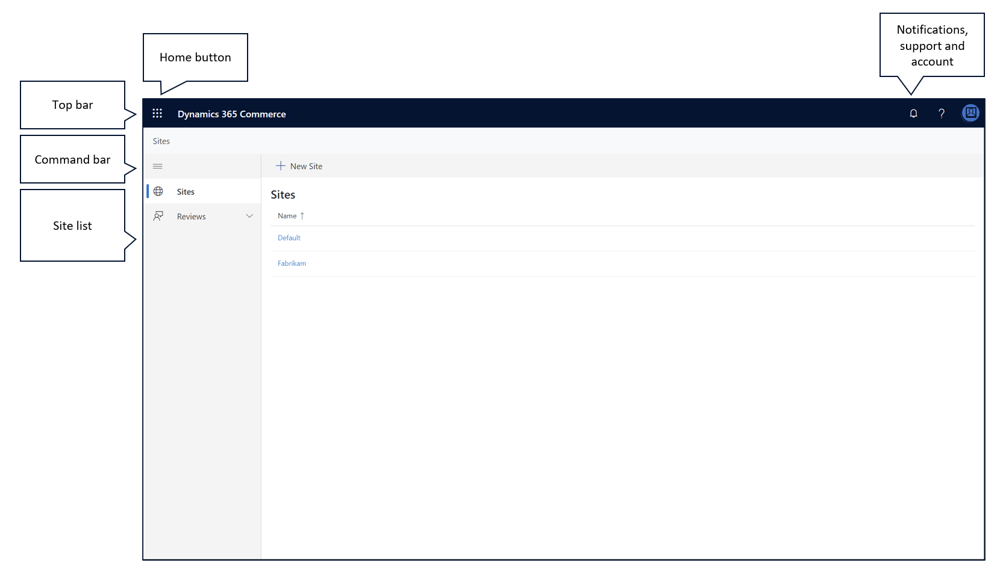

Authoring page overview
This topic provides an overview of the authoring page in Microsoft Dynamics 365 Commerce.
Overview
Websites can be created to support various business needs. They can represent a whole business, offer a single channel of the business, or target a specific audience or segment of an audience. For example, a clothing manufacturer might have a website that showcases all the brands that it owns. The same clothing manufacturer might then have a separate website for each of those brands, and also a set of websites that feature luxury fashion, outdoor fashion, and children's fashion.
Dynamics 365 Commerce supports the creation and management of multiple websites, and each website can have its own appearance and content. The authoring page serves as a common access point for these websites. You can use it to sign in to and out of the system, and to create new websites.
Currently, the authoring page consists of the following sections.
- Top bar – The top bar appears at the top of the authoring page. It provides easy access to e-Commerce tools, notifications, support links, and user sign-in.
- Command bar – The command bar appears below the top bar. It can be used to create new websites.
- Site list – The site list fills all the space below the command bar. It provides a comprehensive list of websites and the domains that are associated with them.
The following illustration shows the authoring page.

Use the Home button to select a tool
The Home button is in the upper-left corner of the authoring page. It provides easy access to other e-Commerce tools. When you select this button, a menu of the tools that you can use is opened. When you select a tool, the menu is closed, and the selected tool is loaded in the browser.
View and clear notifications
The Notifications button is one of the buttons in the upper-right corner of the authoring page. It looks like a bell. By selecting this button, you can view all the notifications that have been sent to you.
Notifications are used throughout the authoring tool to inform you when actions have been completed. For example, a notification might state, "Your page has been published" to inform you that a publish action was successful.
Notifications can also inform you about errors that were encountered while an action was being performed. Select the error notification to open its message. The information in this message can help you resolve the error.
You can clear notifications from the notification menu by selecting Remove at the bottom of the notification message. To clear notifications in bulk, select Remove all at the bottom of the notification menu.
Get help with the authoring tool
The Help button is another button in the upper-right corner of the authoring page. It looks like a question mark. When you select this button, a menu of the following predefined options is opened:
- Site development help – If you select this option, the documentation for creating a new website is opened on a new browser tab.
- Feedback and support – Select this option to open a Microsoft Yammer channel where you can leave feedback about the authoring tool or request support.
- Privacy and cookies – If you select this option, the Microsoft privacy statement is opened on a new browser tab.
- About – Select this option to open a message box that contains information about the authoring tool and the version that you're currently using.
Sign in to and out of the authoring tool
The My account button is another button in the upper-right corner of the authoring page. It looks like a colored circle. By selecting this button, you can see which account you used to sign in, and you can also sign out of that account as you require.
To sign in to or out of the authoring tool, follow one of these steps.
- If you aren't already signed in to the authoring tool, select My account > Sign in to sign in.
- If you're already signed in and want to sign out, select My account > Sign out.
Change the display language of the authoring tool
You can also use the My account button to change the language of the text strings that appear in the authoring tool.
To change the display language, follow these steps.
- Select My account > Change language. A dialog box appears.
- Select one of the user languages, and then select Save.
Create a new website
Dynamics 365 Commerce supports the creation and management of multiple websites, and each website can have its own appearance and content.
To create a new website, follow these steps.
On the command bar, select New Website. A dialog box appears.
Enter the following required information for the new website:
- Site name – Enter the name of the website. This name isn't shown to website customers. Instead, it's used in the site list and other places in the authoring tool.
- Site administers security group – Enter the full name of the Microsoft Azure Active Directory (Azure AD) security group that contains the users who should have administrative access to the website. The admin group name, together with the other permissions for the website, can be changed after the website is created.
- Default channel – Enter the default merchandizing channel that should be associated with the website. The default channel determines the products that can be sold through the website.
- Default language – After you specify the default channel, select the default language for the channel. The default channel defines the language that products are shown in if the customer doesn't specify a preferred language.
- Default market – Enter the default market for the website. The default market defines the market that is shown if the customer doesn't specify a preferred market.
- Domain – Select the web domain that should be associated with the website. This domain is the domain that the website's customers will go to in their browser.
Select OK. The new website is created.
Note
Creation of a new website can take up to 60 seconds. After the process is completed, a notification appears in the notification area. Additionally, the website appears in the site list and has the site name that you entered.
Select a website to author
The site list provides a comprehensive list of the websites that are associated with the e-Commerce system. Websites appear in alphabetical order. The domain that is associated with each website is also shown. To view the contents of a website and start to author pages, select the name of the website. The authoring tool and the content for the website are loaded.
After the authoring tool is loaded, you can select Home to return to the authoring page.
Additional resources
Manage e-Commerce users and roles
Search engine optimization (SEO) considerations for your site